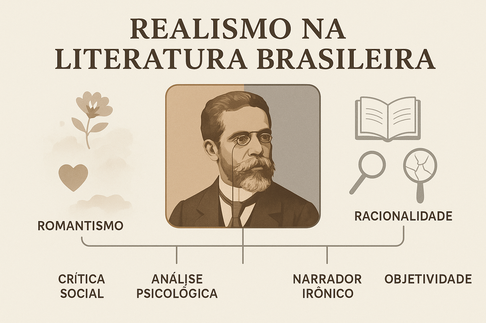

Realismo na Literatura Brasileira
O Realismo na Literatura Brasileira foi um movimento literário que surgiu na segunda metade do século XIX, como uma reação direta ao idealismo e à subjetividade do Romantismo. Influenciado por correntes filosóficas e científicas da época, como o Positivismo, o Determinismo e o Naturalismo, o Realismo buscou representar a realidade de forma objetiva, crítica e racional, analisando o comportamento humano e as contradições sociais do Brasil oitocentista.
Contexto Histórico e Social
O Realismo surgiu no Brasil em um momento de grandes transformações políticas, sociais e culturais. A escravidão estava sendo questionada, o Império passava por crises e cresciam as ideias republicanas e abolicionistas. Ao mesmo tempo, o avanço das ciências e o prestígio do método científico influenciaram profundamente a forma de pensar e de escrever.
Enquanto o Romantismo idealizava o amor, a pátria e o herói, o Realismo propunha o oposto: a observação racional da vida cotidiana e das relações humanas. A arte passou a ser vista como uma forma de analisar criticamente a sociedade, e não de fugir dela.
Características do Realismo
O Realismo introduziu novas formas de representação literária, voltadas à análise psicológica e social. Entre suas principais características estão:
- Objetividade e impessoalidade: o narrador assume uma postura neutra e analítica, sem interferir com emoções pessoais.
- Crítica social e moral: as obras denunciam a hipocrisia da burguesia, o falso moralismo e as injustiças sociais.
- Personagens complexos: indivíduos movidos por interesses, desejos e contradições, em vez de heróis idealizados.
- Análise psicológica: o foco na mente e nas motivações humanas torna-se central.
- Descrição detalhada: observação minuciosa da realidade, quase como um “experimento” literário.
- Linguagem direta e precisa: sem exageros emocionais ou sentimentalismo.
Principais Autores e Obras
O maior representante do Realismo no Brasil é, sem dúvida, Machado de Assis. Sua obra marca a transição do Romantismo para o Realismo e consolida o movimento no país.
- Machado de Assis – Memórias Póstumas de Brás Cubas (1881), Dom Casmurro (1899) e Quincas Borba (1891).
- Raul Pompeia – O Ateneu (1888), que analisa a formação moral e psicológica de um jovem em um colégio autoritário.
- Aluísio Azevedo – ainda que seja mais ligado ao Naturalismo, suas obras, como O Cortiço (1890), dialogam com a estética realista ao retratar a vida urbana e as desigualdades sociais.
Machado de Assis e a Revolução da Narrativa
Machado de Assis revolucionou a literatura brasileira ao introduzir um narrador irônico e reflexivo, que dialoga com o leitor e questiona a própria veracidade do que conta. Suas obras exploram a psicologia humana com profundidade e revelam o lado oculto das relações sociais, especialmente da elite carioca do século XIX.
“Não tive filhos, não transmiti a nenhuma criatura o legado da nossa miséria.” — Machado de Assis, Memórias Póstumas de Brás Cubas
Essa frase sintetiza o tom crítico e desencantado do Realismo machadiano, que vê a sociedade com ironia e pessimismo, mas também com um olhar agudo e inovador.
O Realismo e o Naturalismo
Embora próximos, o Realismo e o Naturalismo possuem diferenças importantes. O Naturalismo é uma vertente mais radical, que aplica às personagens e situações os princípios científicos do Determinismo e da Hereditariedade. Enquanto o Realismo analisa o comportamento humano sob o ponto de vista moral e psicológico, o Naturalismo o faz a partir de leis biológicas e sociais.
- Realismo: foco psicológico, análise da consciência e das intenções humanas.
- Naturalismo: foco biológico e social, observação do homem como produto do meio e da hereditariedade.
Legado do Realismo na Literatura Brasileira
O Realismo abriu caminho para uma literatura mais crítica e madura no Brasil. Rompeu com o sentimentalismo do Romantismo e inaugurou uma fase de reflexão sobre a sociedade, o indivíduo e as estruturas de poder. Sua influência se estende até a literatura moderna e contemporânea, inspirando autores que buscam compreender o ser humano em suas contradições e ambiguidades.
“O Realismo é a arte de fazer da observação uma forma de revelação.” — (Autor desconhecido)
Conclusão
O Realismo representou um marco na evolução da literatura brasileira, não apenas por suas inovações estéticas, mas também por sua contribuição crítica e filosófica. Com ele, o escritor brasileiro deixou de idealizar e passou a investigar — a literatura tornou-se espelho e instrumento de análise da realidade social e moral do país.